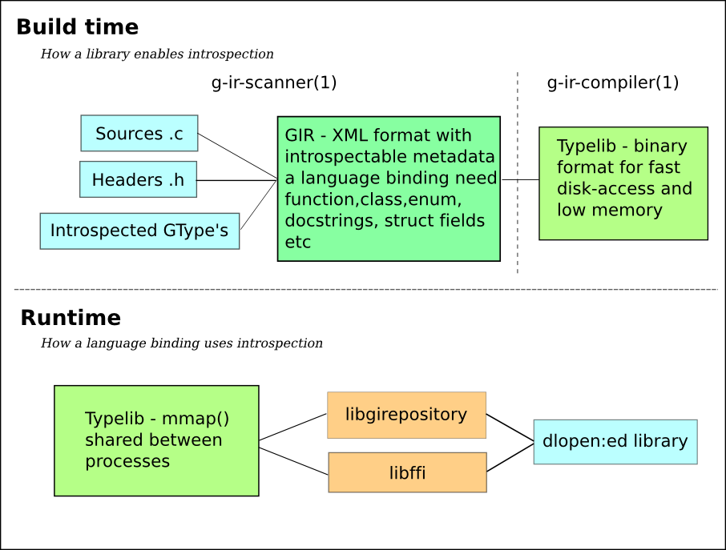

Table of Contents
GObject-Introspection is striving to provide a middleware layer between (GObject based) C libraries and language bindings. The primary goal of this project is to minimize duplicated effort in language binding projects by providing shared metadata files on bound C libraries. Language bindings can read these metadata files at runtime to learn how to interface with a bound C library.
The GObject-Introspection package contains of a few different parts:
The GIR XML format - an XML format describing the exported C API including documentation
The GTypelib format - a binary format optimized for fast disk access and low memory usage
g-ir-scanner - parses C source code and gtk-doc comments and generates GIR XML files
g-ir-compiler - compiles GIR XML files into typelibs
libgirepository - library to access typelib from C
The following illustration shows how the different components fit together:
